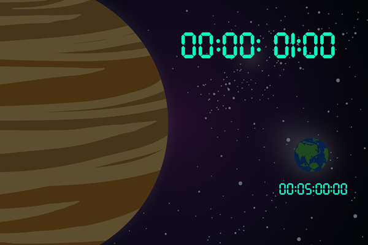
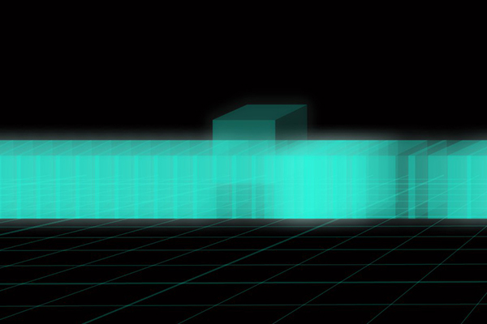
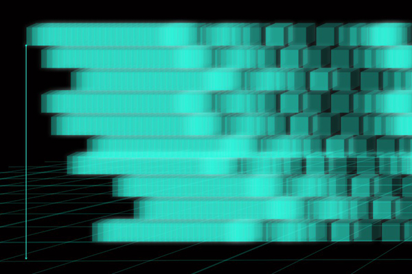

當我們所處的重力不同，時空被扭曲的程度就會有所不同，當我們感受到重力越大的地方，時間也就過的越慢。
因此會出現天上1天，人間10年這種時間相對的情況發生。
而我們都能清楚的了解一維到三維的空間，而我們人類所在的維度就是三維空間，低維度的世界是看不到高維度的世界的。
根據科學家的推測，五維空間是可 能存在的，而最可能存在五維的地方，就是黑洞。

先來說說四維，四維就是在我們的三維空間再多加一個｢時間｣的軸。
在四維空間的人所看到的會是一個人從出生到死亡的一個連續軌跡，所以簡單來說三維就是四維的某一個時刻，四維是三維的集合。

再來就是五維，五維就是四維多了一個｢重力｣的軸，四維是許多三維所形成的，而五維也是許多四維所組成的，也就是由許多時間軸組成。
在五維的人看到的東西不是某一個人的一生了，而是某一個人一生的許多可能。
因為在五維裡的人是可以回到過去改變過去的狀態，當改變了過去，就會產生另一個歷史進程，也就是後面所會提到的平行時空。
而會有這樣的狀態則是因為極大的重力能扭曲時空。
而每個時間軸會有交錯，所以五維的人可以隨意的看到任何時空任何狀態。
所以控制重力，我們也就能控制時間，能回到未來，也能回到過去。